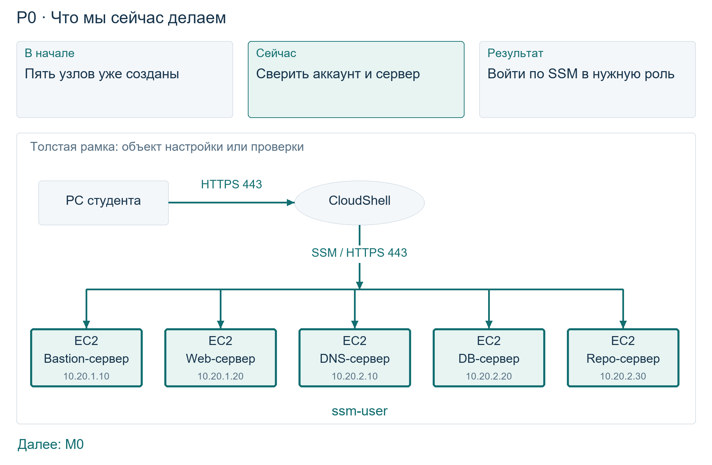

P0 Своя среда и место выполнения команд
Сначала: подключение и правила · Практика P0–P6 · Задания M0–M6 · Проверка в браузере
2026-11-03 · D12 P/M r1.4
Комплект действителен до конца 31 января 2027 года (UZT).
Перед началом
Проверьте подключение и правила. Связанное задание: M0. Проверка описана в инструкции браузера.
Что изучаем
Различать CloudShell, Windows и пять Ubuntu-серверов; подключаться через SSM к нужному узлу и запускать самопроверку.
Задание
Проверьте свой Lab ID, ID комплекта и instance ID пяти ролей. Это проверка предоставленной среды, 0 баллов. Если пяти серверов ещё нет, сначала выполните начальную установку. Для готовой среды не повторяйте create, создание ключей и регистрацию.
Схема задания

Толстая рамка отмечает основной объект. Настраивайте в терминале, указанном в шаге; стрелки показывают направление подключения или проверки. Разрешения SG заданы начальным комплектом; здесь настраивается сервер. Стрелка SSM означает подключение через AWS, а не открытие входящего 443 на EC2.


Как это работает
Состояние перед началом:
Используются ваши пять узлов после начальной установки и регистрации.
Что изменится в этом P:
Вы различаете аккаунт, роль и место работы; учебные файлы подготовлены.
AWS Console управляет ресурсами, CloudShell - ваш терминал с AWS CLI, SSM открывает сеанс внутри выбранного EC2. Пять серверов остаются разными ОС: путь /var/www на Web не является тем же каталогом на DB. Проверяйте отдельно роль сервера и пользователя ОС.
Пример решения: выполняйте по одному шагу
P0.1 Проверить свой CloudShell и комплект
Место выполнения:
CloudShell в личном AWS-аккаунте студента
Цель и действия:
Откройте AWS из своего класса Academy и запустите CloudShell. Замените LAB_ID значением преподавателя. INSTALL - каталог для последующего размещения материалов. Проверьте установленный файл и свой AWS account; проверку задания выполните в браузере в конце.
Команды: нумерация внутри этого шага
# 1. Записать свой Lab ID от преподавателя в переменную.
LAB_ID='YOUR-LAB-ID'
# 2. Указать ID используемого подписанного комплекта.
COURSE_ID='web-course-class193548-20261103-r3'
# 3. Сохранить путь к своему установленному комплекту.
INSTALL="$HOME/.local/share/jdu-web/courses/$COURSE_ID/$LAB_ID"
# 4. Показать номер текущего AWS account.
aws sts get-caller-identity --query Account --output text
# 5. Показать INSTALL_OK, если файл начальной установки существует.
test -f "$INSTALL/activate.sh" && printf 'INSTALL_OK\n'
Смысл команд и настроек:
INSTALL указывает на уже установленный комплект. test -f проверяет наличие файла, не пересоздавая среду. Проверка AWS account не является выполнением задания.
Ожидаемый результат и его смысл:
Account должен совпадать с вашим. INSTALL_OK подтверждает наличие файла начальной установки. Это подготовка к работе, а не выполнение задания.
Если не получилось:
При No such file проверьте начальную установку и install. Старая команда поддерживает не все задания. Просроченный комплект обновляет преподаватель.
P0.2 Записать instance ID пяти серверов
Место выполнения:
AWS Console своего студенческого аккаунта
Цель и действия:
В EC2 → Instances сверяйте теги LabId и DeploymentId. Запишите instance ID ролей bastion/web/dns/db/repo в рабочую таблицу. Не выбирайте только по имени. Public IPv4 есть у bastion и web. Для SSM нужен instance ID, а не публичный IP.
Смысл команд и настроек:
Instance ID идентифицирует EC2, роль обозначает его задачу, public IP служит внешним адресом. Изменение public IP не означает замену instance ID. В рабочей таблице свяжите каждую из пяти ролей с её ID.
Ожидаемый результат и его смысл:
Все пять узлов running и SSM Online; private IP совпадают с общей таблицей. Public IPv4 может измениться после остановки и запуска.
Если не получилось:
Не трогайте другой Lab, аккаунт или неизвестные узлы. Для остановленных серверов используйте инструкцию запуска. Не применяйте Reset или Terminate.
P0.3 Подключиться по SSM и вернуться
Место выполнения:
CloudShell в личном AWS-аккаунте студента
Цель и действия:
Подставьте instance ID Web из EC2. После подключения вы работаете в Ubuntu, а не в CloudShell. id -un показывает управляющего пользователя SSM; role в bootstrap.json - роль сервера. Один exit возвращает в CloudShell.
Команды: нумерация внутри этого шага
# 1. Из CloudShell открыть SSM к выбранному EC2; дождаться подключения.
aws ssm start-session --target i-YOUR-WEB-INSTANCE-ID
# 2. Показать имя пользователя ОС в этом терминале.
id -un
# 3. Показать hostname подключённого сервера.
hostname
# 4. Прочитать только role из bootstrap, чтобы проверить выбранный сервер.
python3 -c 'import json;print(json.load(open("/etc/jdu-web/bootstrap.json"))["role"])'
# 5. Показать текущий рабочий каталог.
pwd
# 6. Закрыть сеанс текущего сервера и вернуться в CloudShell.
exit
Смысл команд и настроек:
Сначала выполните только start-session в CloudShell и дождитесь подключения. Затем вводите остальные строки по одной. Id -un показывает пользователя, hostname - имя ОС, role - учебную роль. Exit закрывает один уровень сеанса.
Ожидаемый результат и его смысл:
Ожидаются ssm-user и role web. Проверяйте их при каждом переходе. При SSH имя пользователя Ubuntu может быть ubuntu.
Если не получилось:
При TargetNotConnected проверьте running, SSM Online и регион us-east-1. Не открывайте все порты SG и не скачивайте ключи в Windows.
P0.4 Подготовить только открытые учебные файлы
Место выполнения:
CloudShell в личном AWS-аккаунте студента
Цель и действия:
Загрузите zip этого пособия через CloudShell → Actions → Upload file; распакуйте командой unzip web-lab-pm-r1.zip. Перейдите в resources и выполните команду. Инструмент сверяет личный подписанный комплект и исходные пять узлов; переносит открытые файлы приложения, SQL и инструмент скрытого ввода на Web/DB. Сервисы и БД он не создаёт, секреты не передаёт.
Команды: нумерация внутри этого шага
# 1. Перейти в рабочий каталог $HOME/web-lab-pm-r1/resources.
cd "$HOME/web-lab-pm-r1/resources"
# 2. Сверить подписанный комплект и свои пять узлов, разместить материалы на Web/DB.
python3 -B stage_resources.py --installation "$INSTALL"
Смысл команд и настроек:
Открытые учебные файлы - материалы приложения и SQL, а не готовая служба. Stage_resources.py запускается в CloudShell и переносит их на Web/DB. Сохранение zip в Windows само по себе не создаёт файлов в EC2.
Ожидаемый результат и его смысл:
Вывод содержит PUBLIC_LESSON_RESOURCES_READY=web и =db. Открытые файлы находятся в /var/lib/jdu-web/lesson-resources-r1; отличающиеся существующие файлы не заменяются.
Если не получилось:
При незавершённой установке, другой версии или истечении срока остановитесь и сообщите преподавателю. Не используйте проверочные fixture, автоматически создающие готовое решение.
P0.5 Проверить готовность в браузере
Место выполнения:
Браузер на своём PC: Web Portal
Цель и действия:
Откройте Web Portal по инструкции браузера. Войдите через школьный Google, завершите привязку своего AWS, выберите P0 и запустите проверку. Если обработка продолжается, обновите результат. Так же проверьте M0. P0/M0 проверяют готовность и не добавляют оценочных баллов.
Смысл команд и настроек:
Браузер сохраняет результат автоматически. Различайте PASS/FAIL/UNKNOWN и статус обработки/сохранения. P и M0 не добавляют баллов даже после сохранения.
Ожидаемый результат и его смысл:
Проверьте свой Lab, ID задания и время. Прочитайте результаты check и статус сохранения; дождитесь завершения и сохранения. UNKNOWN означает невозможность измерения, а не успех.
Если не получилось:
Для обращения запишите check ID, время и роль узла. Не передавайте token, пароль и личный URL.
P0.6 Открыть рабочий стол бастиона по RDP
Место выполнения:
Windows PC студента (общая учётная запись)
Цель и действия:
Используйте текущий public IPv4 бастиона из EC2. Нажмите Windows+R, введите mstsc /prompt и Enter. В Computer укажите IP, пользователь labuser, пароль - свой RDP из начальной установки, не пароль Windows. Не выбирайте сохранение credentials. Если появится синий login xrdp, выберите Session=Xorg и labuser.
Команды: нумерация внутри этого шага
# 1. Открыть RDP Windows с запросом учётных данных.
mstsc /prompt
Смысл команд и настроек:
RDP передаёт экран и ввод бастиона. Запрос Firefox внутри RDP идёт от бастиона, а не Windows. Раскладка клавиатуры влияет на символы пароля; язык интерфейса и раскладка - разные настройки.
Ожидаемый результат и его смысл:
Открываются Xfce и Firefox внутри Ubuntu-бастиона. Это не браузер Windows. labuser не имеет sudo: настройку выполняйте через CloudShell → SSM/ssm-user.
Если не получилось:
При Login failed проверьте имя и раскладку клавиатуры. Не отправляйте пароль в чат. При недоступности сверьте текущий IP и разрешённый CIDR с преподавателем; не открывайте 3389 для всех. Перед закрытием RDP сохраните работу.
Проверка понимания (без баллов)
Какой узел изменится, если выполнить шаги DB в открытом SSM-сеансе Web?
Объяснение:
Изменится Web. Вернитесь через exit в CloudShell и подключитесь к instance ID DB.